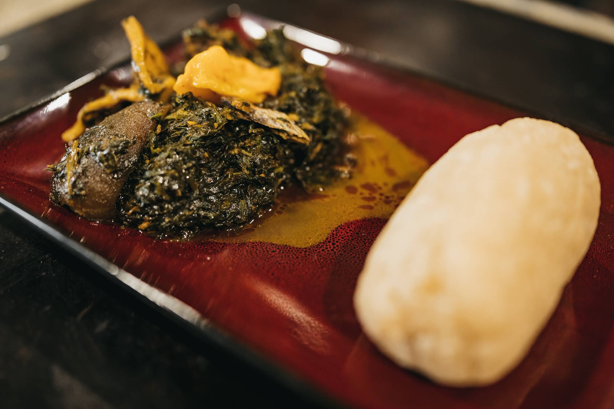
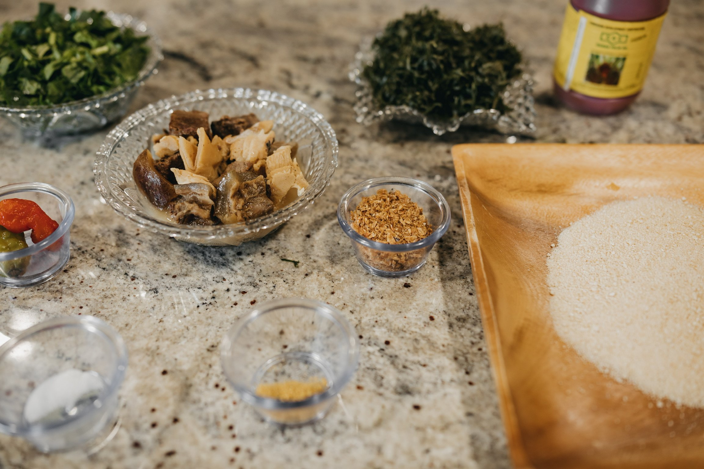
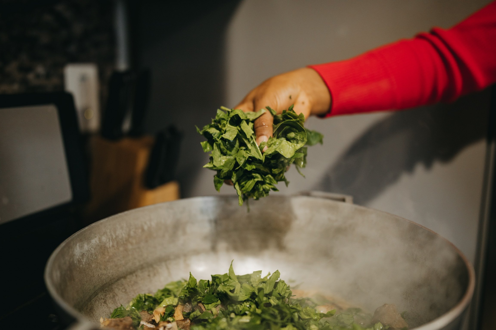
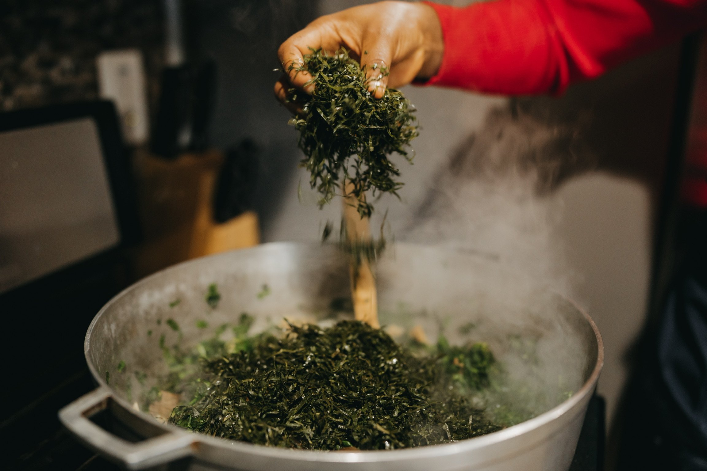
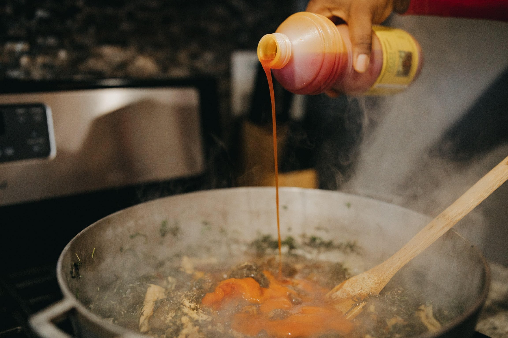
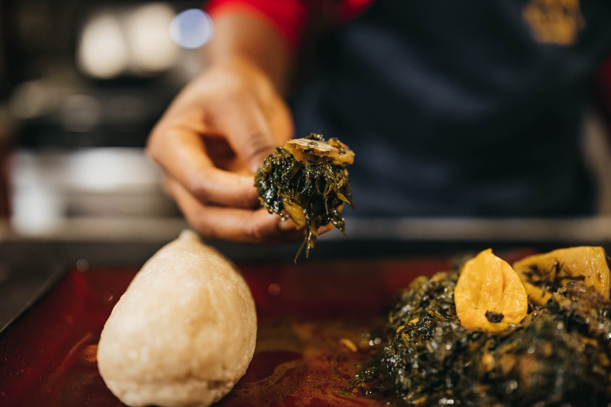

Garri and Eru Recipe

Description
Dish: Garri and ERU
Country: Cameroon
Ethnic Group: Manyu, Southwest Region of Cameroon
Eru is commonly eaten with cassava fufu (locally called water fufu);
although it is a native dish to the Manyu people, water fufu and Eru is also one of Cameroon’s signature dishes.
It is a finger-licking dish at the center of the table in a Cameroonian party and it is sometimes the first to finish on the table in a party.
In many restaurants and homes in Cameroon, whenever Fufu and Eru is on the menu for the day,
everyone happily awaits the moment when the food is served to feast on it.
Ingredients
- ½ kilo Beef
- Smoked Fish
- ½ Cooked Cow Skin
- Crayfish
- 1 litre of Palm Oil
- 2 Habanero Peppers
- 2 Pounds of Fresh Spinach or Water Leaves
- 4 oz of Eru
- Salt and Bouillon
- 2 Cups of Garri

Steps
- Thoroughly wash the eru under running tap water.
Use a strainer to strain the eru and squeeze firmly to drain excess water then,
set aside.
- Cut the meat into bite-size pieces and wash thoroughly under running tap water.
Place the meat into a clean pot and add salt, bouillon,
and enough water until it is slightly above the level of the meat.
Cook on medium heat until it is ready.
- Add the cooked tripe, fish, cow skin,
and habanero pepper into the pot and allow to cook on medium heat for 10 minutes.
- Add the spinach or water leaves into the pot and mix well.
- Note: at this stage, leave the pot open.
Covering the pot will cause the spinach or water leaves to become over-cooked,
making it lose its green colour.

- Add the crayfish, adjust the salt and bouillon to your desired taste and mix well.
- Add the eru into the pot and mix until it's fully incorporated.
Allow it to cook on medium heat while mixing intermittently.

- Note: eru does not need too much water.
However, if you notice that the eru is getting dry add a cup of water to moisten the eru.
- When you notice that the eru is getting soft,
add the palm oil and mix well. Then allow it to cook on low heat until the palm oil is ready.
-
Note: you can tell when the palm oil is ready if it has melted into the pot,
no longer taste like raw palm, and blends all the flavours.

- Turn off the stove and set the pot aside.
- Pour the Garri into a microwavable bowl and add water until it is slightly above the level of the garri in the bowl,
then stir so that the water is mixed in the garri.
- Place the bowl into a microwave and microwave for 4 minutes.
Remove the bowl and stir the garri so that it cooks evenly.
If the garri is too hard, add ¼ cup of water into the bowl.
If the garri is too soft, add ¼ cup of uncooked garri into the bowl,
then mix well and microwave again for 2 minutes.
- Remove the bowl and stir the garri.
Adjust the texture, if needed and mix well, then set aside for serving.
Serving the Garri and Eru
Mould the garri into a round, cone,
or cylinder shape and transfer it onto a clean plate.
Add the Eru to the side, wash your hands and enjoy with a favourite drink!

Bonne appetit